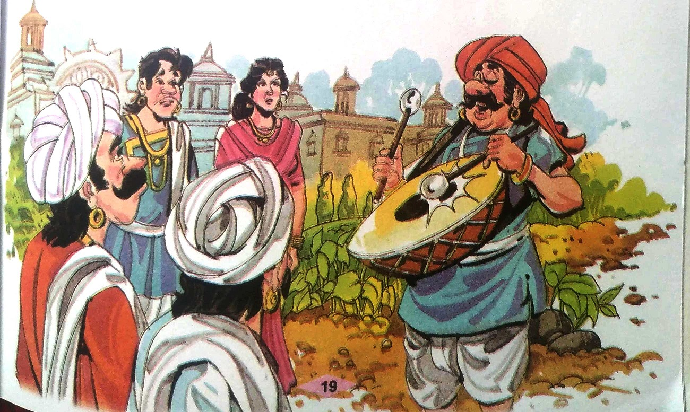
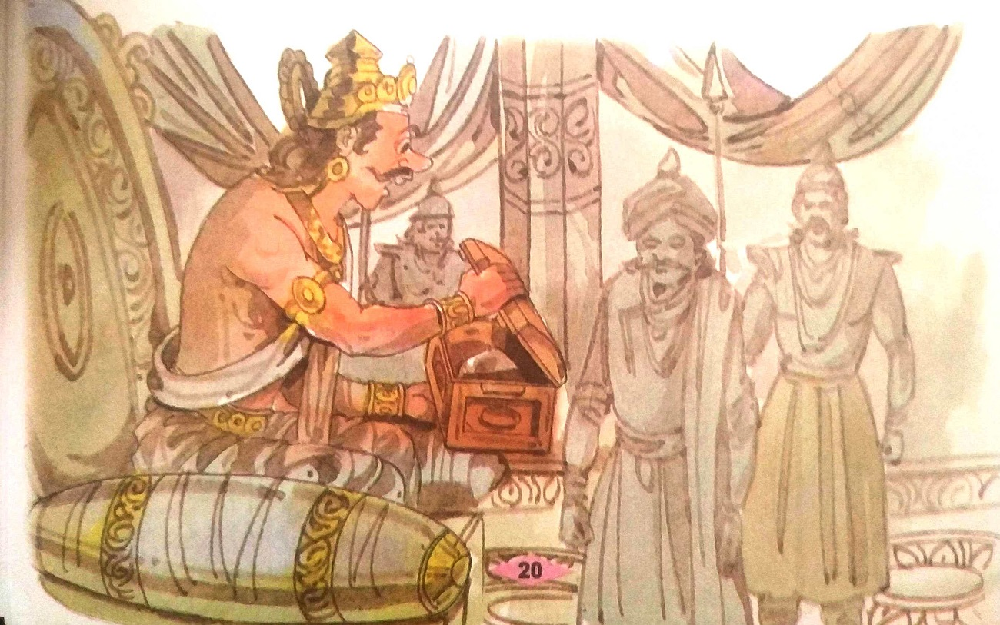
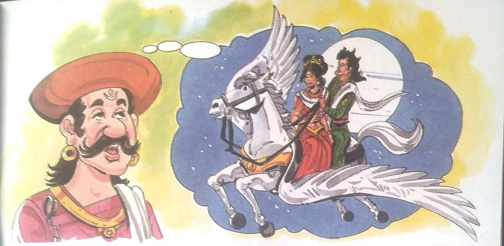
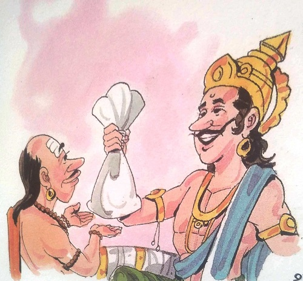
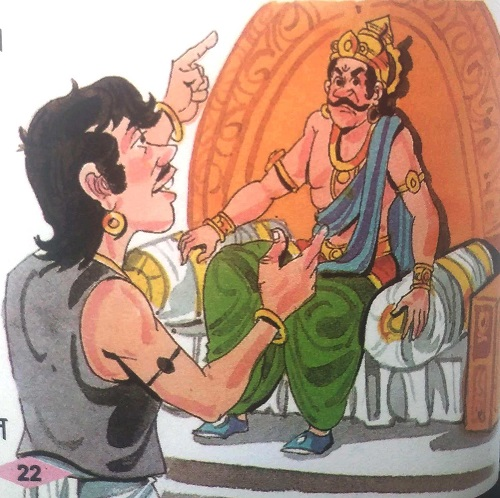
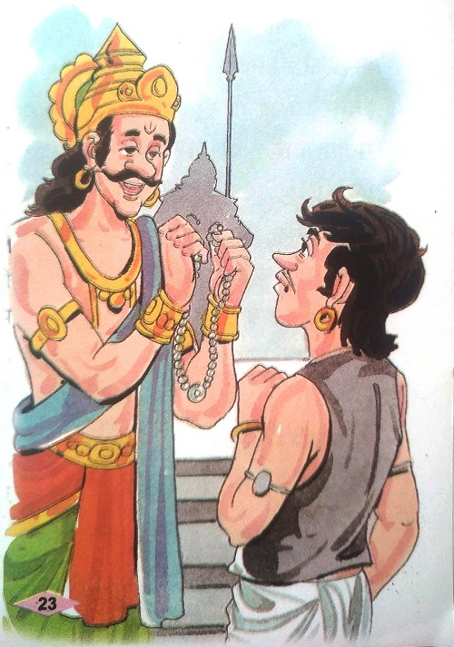
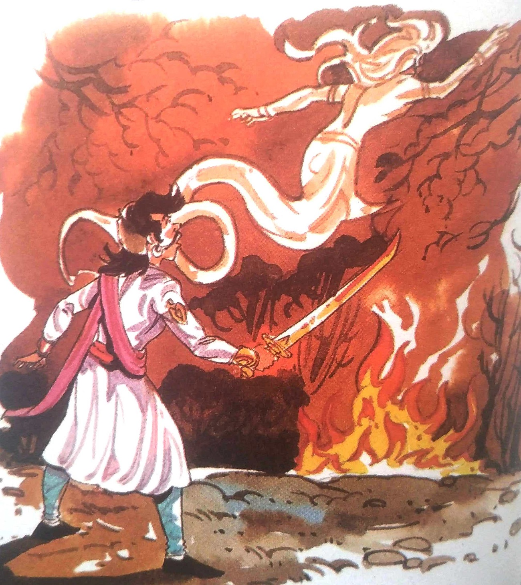

૪-અવિશ્વસનીય સત્ય
રાજા વિક્રમાદિત્ય ફરીથી ઝાડ પાસે ગયા. મૃતદેહને ઝાડ પરથી નીચે ઉતારીને ખભા પર લટકાવીને
ચાલ્યો ગયો. વેતાલાએ બીજી વાર્તા કહેવાનું શરૂ કર્યું - એક સમયે રાજા યશોધર વર્મા
વિદર્ભ પર શાસન કરતા હતા. તેઓ એક આદર્શ રાજા હતા. લોકો તેમના રાજ્યમાં ખુશ હતા. તેથી રાજાનું ધ્યાન
મનોરંજન વગેરે તરફ ગયું. તેઓ મનોરંજન વગેરેમાં સમય પસાર કરવા લાગ્યા. તેમણે પોતાના મંત્રીઓને શાસનની
જવાબદારી સોંપી હતી. મંત્રીઓ સમયાંતરે રાજાને મળતા અને તેમને ખાતરી આપતા કે રાજ્યમાં બધું બરાબર
ચાલી રહ્યું છે અને તેમને ચિંતા કરવાની કોઈ જરૂર નથી. રાજાએ તેની વાત માની.
એકવાર રાજાના મનમાં એક અનોખો વિચાર આવ્યો. તેણે પોતાના તમામ મંત્રીઓને બોલાવીને કહ્યું,
"આપણી પૂર્ણિમાના દિવસે તમે બધાએ કોર્ટમાં હાજર રહેવું જોઈએ. તે દિવસે લોકો પણ કોર્ટમાં હાજર રહી
શકે છે અને પુરાવા સાથે અવિશ્વસનીય સત્ય કહી શકે છે. જે આમાં સફળ થાય છે. કાર્યને મૂલ્યવાન પુરસ્કાર
આપવામાં આવશે." ભેટ આપવામાં આવશે અને તેનું સન્માન પણ કરવામાં આવશે." સમગ્ર રાજ્યમાં આ જાહેરાત
કરવામાં આવી હતી. પૂર્ણિમાના દિવસે તેના સિંહાસન પર રાજા બેઠા. અવિશ્વસનીય સત્યો સાંભળવા ઘણા લોકો
એકઠા થયા હતા. રાજ્યના મંત્રીઓ અને અન્ય મહાનુભાવો પણ ત્યાં હાજર હતા. રાજાએ કહ્યું, "તમારામાંથી જે
કોઈ અવિશ્વસનીય સત્ય કહેવા માંગે છે તે કરી શકે છે. તેને મૂલ્યવાન ઈનામ આપવામાં આવશે."

સૌથી પહેલા ગોપી નામના ખેડૂતે આગળ આવીને રાજાને વંદન કર્યા. રાજાને લાકડાની એક પેટી
બતાવીને તેણે કહ્યું, "મહારાજ! થોડા સમય પહેલા, જ્યારે હું મારા ખેતરમાં ખેડાણ કરતો હતો, ત્યારે મને
આ નાનકડી પેટી મળી. મેં તેને ખૂબ આશા સાથે ખોલી. મેં તેને ખોલતા જ દિવસ અંધકારમય થઈ ગયો. એમાં એક
કાળા રંગનો પથ્થર હતો.અંધારું થતાં જ હું ડરી ગયો અને મેં તરત જ બોક્સ બંધ કરી દીધું.મેં બોક્સ બંધ
કર્યું કે તરત જ અંધકાર દૂર થઈ ગયો.પછી મને સમજાયું કે બોક્સની અંદરનો પથ્થર હતો. અંધકારનો પથ્થર.
હા. તે પથ્થર આ બોક્સમાં છે."

રાજાએ ગોપી પાસેથી પેટી લઈને ખોલ્યું. તેણે આ કર્યું કે તરત જ સમગ્ર સભામાં અંધકાર છવાઈ
ગયો. રાજાએ તરત જ બોક્સ બંધ કરી દીધું અને અંધકાર દૂર થઈ ગયો.
"અરે વાહ. અંધકારનો આ પથ્થર એક અવિશ્વસનીય સત્ય છે." રાજા યશોધર વર્માએ આશ્ચર્ય સાથે કહ્યું અને
ગોપીઓને એક મૂલ્યવાન ભેટ આપી.

એ પછી રત્નાકર નામનો વેપારી ઊભો થયો. રાજાને નમસ્કાર કર્યા પછી તેણે કહ્યું, "મહારાજ.
એક ચાંદની રાતે, જ્યારે હું મારા ઘરના બગીચામાં ફરતો હતો, ત્યારે મેં એક અદ્ભુત દૃશ્ય જોયું. મેં એક
દિવ્ય પુરુષ અને સ્ત્રીને પાંખવાળા ઘોડા પર સવારી કરતા જોયા. નજીકમાંથી તેમનું એક ફૂલ. મારા
બગીચામાં પડ્યું અને બીજી જ ક્ષણે બગીચાના ઘરમાં એક પ્રકારનું દિવ્ય સૌંદર્ય પ્રસરી ગયું.મેં તે ફૂલ
ઉપાડીને મારા મંદિરમાં રાખ્યું.પછીથી મને ખબર પડી કે એ ફૂલ કદી સુકાઈ જતું નથી અને તેની સુંદરતા
ક્યારેય ઝાંખી નથી થતી. " એમ કહીને તેણે રાજાને ગજદંથની બનેલી ભરણી આપી.
રાજાએ પાત્ર ખોલીને જોયું. તેમાં એક ફૂલ હતું, જે દેખાતું હતું કે તે હમણાં જ ખીલ્યું
છે. તેમનું દિવ્ય તેજ સમગ્ર સભામાં પ્રસરી ગયું હતું.
|

|
"મેં આવા ફૂલો વિશે ફક્ત વાર્તાઓમાં જ વાંચ્યું હતું. આ પણ એક અવિસ
છે." આટલું કહીને રાજાએ પોતાની
એક બંગડી રત્નાકરને આપી.ત્યાર બાદ મહાયક્ષ નામના વિદ્વાન રાજાની સમક્ષ ગયા અને
કહ્યું કે "મહારાજ,
મારી પાસે એક પ્રાચીન સિક્કો છે. ફક્ત તેને સ્પર્શ કરવાથી તમે જૂની વસ્તુઓ યાદ કરી
શકો છો."
એમ કહીને તેણે તે સિક્કો રાજાને આપ્યો. રાજાએ તે સિક્કાને અડતા જ તેને
એકસાથે બધી જૂની વાતો યાદ આવી
ગઈ. રાજા ખુશ થયા અને પંડિત મહાયક્ષને સોનાના સિક્કા આપ્યા.
સભામાં થોડીવાર મૌન છવાઈ ગયું હતું. થોડી વાર પછી શિવદત્ત નામના યુવકે
કહ્યું, "મહારાજ! હું
સિંહદ્વાર થઈને સભામાં આવ્યો નથી. હું અહીં કેવી રીતે પ્રવેશ્યો તે તમે જાણો છો?"
'તમે કેવી રીતે
આવ્યા?' રાજાએ કુતૂહલવશ પૂછ્યું
|
"મહારાજ! હું લાંચના દરવાજેથી અંદર આવ્યો છું. આ સભામાં કેટલાક લોકો અવિશ્વસનીય
સત્ય
કહીને તમને
મળવા આવ્યા હતા. તમારા રક્ષકોએ તેમને અંદર જવા માટે દસ-દસ અશરફી લાંચ તરીકે લીધા હતા અને
પછી તેમને
જવા દીધા હતા. હું પણ આ રીતે તે આવ્યો. તેથી જ મેં તેને લાંચ ગેટ કહ્યો, સિંહદ્વાર નહીં,"
શિવદત્તે
કહ્યું.
“હું માનતો નથી કે રક્ષકો લાંચ લે છે,” રાજાએ મક્કમ અવાજે કહ્યું.
તમે માનશો નહીં, તેથી જ આ અવિશ્વસનીય સત્ય બની ગયું. આ એક માત્ર લાંચ
દરવાજા નથી, પરંતુ રાજ્યમાં
અન્ય ઘણા લાંચ દરવાજા છે. તમે જેમને શાસનની જવાબદારી સોંપી છે, તેઓ તેમની સેવા કરી
રહ્યા છે. લોકો
પર ટેક્સ લાદીને પોતાના હિતો સાધી રહ્યા છે. તેઓ લાંચ લેનારા બની ગયા છે. હું અહીં
આવી અવિશ્વસનીય
સત્યો તમને લાંચ તરીકે જાહેર કરવા આવ્યો છું, ભેટ મેળવવા માટે નહીં,” શિવદત્તે
રાજાને સત્ય કહેતાં
કહ્યું.
|

|
|

|
સત્ય જાણીને રાજા એક ક્ષણ માટે સ્તબ્ધ થઈ ગયા. પછી તમારી જાતને
નિયંત્રિત કરી મંત્રીઓને કહ્યું, શું આ બરોબર છે? એકેય મંત્રી કંઈ બોલ્યા નહીં,
બધાએ શરમથી માથું
ઝુકાવી દીધું. તે
મૌન રહ્યો અને તેણે પોતાના ગુનાઓ કબૂલ કર્યા. પછી જ્યારે રાજાએ ભેટ લેવા આવેલા લોકો
પાસેથી સત્ય
જાણવા માગ્યું ત્યારે તેઓએ શિવદત્તની વાતને સમર્થન આપ્યું. રાજા પોતાના સિંહાસન
પરથી નીચે ઉતર્યા
અને શિવદત્ત પાસે આવ્યા અને કહ્યું, “તમે મને જે કહ્યું તે સૌથી અવિશ્વસનીય સત્ય
છે. હું તમને મારા
સલાહકાર તરીકે નિયુક્ત કરવા માંગુ છું.
જો તમે આ પદ સ્વીકારશો તો મને આનંદ થશે.” આમ કહીને તેણે પોતાના
ગળામાંથી કિંમતી રત્નોનો
હાર કાઢીને
શિવદત્તના ગળામાં મૂક્યો.
વેતાલાએ અહીં વાર્તા સમાપ્ત કરી અને કહ્યું, “રાજાએ જાહેરાત કરી હતી કે જેઓ
સાબિતી સાથે
અવિશ્વસનીય
સત્ય કહેશે તેઓને તે ભેટ અને સન્માન આપશે. પરંતુ રાજાએ અંધકારના અદ્ભુત પથ્થર, દિવ્ય
પુષ્પો, સ્મારક
સિક્કા વગેરે સાથે આવેલા લોકોને ભેટ આપી પરંતુ તેઓ બીજા બધાને ઓછું મહત્વ આપતાં તેમણે
શિવદત્તને
મહત્તમ મહત્વ આપ્યું જેણે વાસ્તવિકતાને તેમની દૃષ્ટિએ લાવ્યો. શું તમે તેનો અર્થ સમજાવી શકો
છો?
શિવદત દ્વારા વર્ણવેલ વાસ્તવિકતાઓ કેવી રીતે અવિશ્વસનીય હોઈ શકે? મારી શંકાઓના જવાબો જાણીને
પણ જો
તમે ચૂપ રહેશો તો તમારા માથાના ટુકડા થઈ જશે."
|
રાજા વિક્રમાદિત્યએ કહ્યું, "તે ત્રણેય રાજાને જે
વસ્તુઓ બતાવી હતી. તેણી ખરેખર અદ્ભુત હતી. પરંતુ શિવદત્તે રાજાને જે સત્ય કહ્યું તે અવિશ્વસનીય
હતું, કારણ કે રાજા જેમને વિશ્વાસપાત્ર માનતા હતા તે મંત્રીઓ સ્વાર્થી અને લાંચ લેનારા નીકળ્યા.
રાજાએ વિચાર્યું કે બધું સારું થઈ રહ્યું છે, પરંતુ તે જૂઠું નીકળ્યું. સત્ય જાણીને રાજાને ઘણો આઘાત
લાગ્યો. રાજા માટે, આ વસ્તુઓ અન્ય વિચિત્ર વસ્તુઓ જેટલી અવિશ્વસનીય હતી કારણ કે તેને તેના મંત્રીઓ
અને નોકરોમાં ખૂબ વિશ્વાસ હતો. અવિશ્વસનીય સત્ય કહેવાના નામે, શિવદત્તે રાજાને સત્ય કહીને હિંમત અને
પ્રામાણિકતાનું કાર્ય કર્યું. તે લોકોનું કલ્યાણ ઇચ્છતો હતો. તેથી રાજાએ પણ તેમને પોતાના સલાહકાર
તરીકે નિયુક્ત કર્યા. "

વેતાલાએ કહ્યું, "વિક્રમ! તેં સાચો જવાબ આપ્યો છે. પણ હવે હું જાઉં છું. તેં તારું મૌન
તોડ્યું
છે."એમ કહીને વેતાલા ઊડીને એ જ ઝાડ પર લટકી ગયો.
|